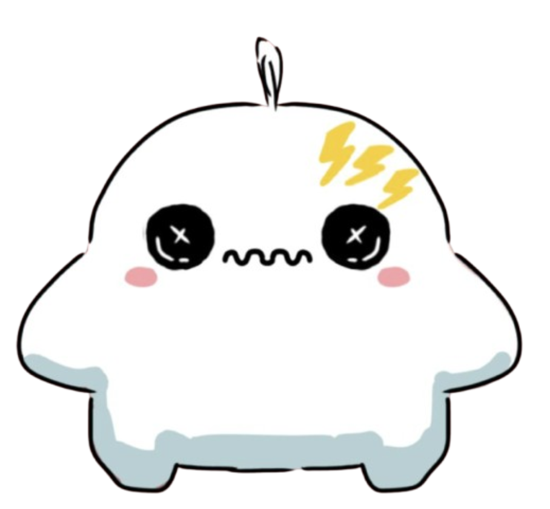

⚡ ADHD — “Ziggy”
A quick-thinking pal whose brain sprints with ideas.
- Ziggy’s thoughts race ahead, so they juggle lots of ideas at once.
- They notice details other people miss and love jumping into new projects.
- Timers, checklists, and gentle reminders help turn all that energy into action.